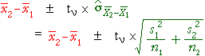

| Prob ( | is within ± 1.96 | of μ2 - μ1) = 0.95 |
If σ1 and σ2 were known...
| Prob ( | is within ± 1.96 | of μ2 - μ1) = 0.95 |
so a 95% confidence interval for µ2 - µ1 would be
| ± 1.96 |
When σ1 and σ2 are unknown...
We must replace σ1 and σ2 by s1 and s2 in the confidence interval, and the constant '1.96' must be replaced by a slightly larger value from t-tables,

where the degrees of freedom for the t-value are
ν = min (n1−1, n2−1)
(A more complex formula is available that gives a higher value for ν. It is slightly better but the difference is usually negligible.)
Example